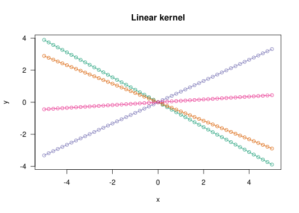
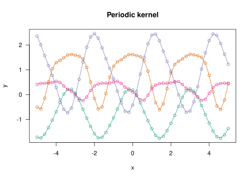
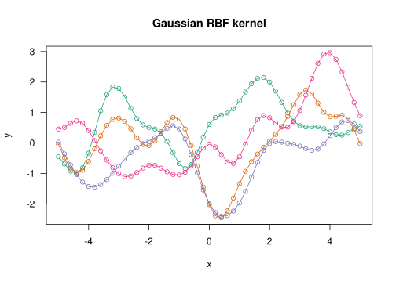
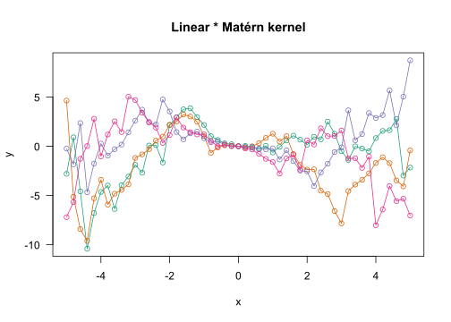
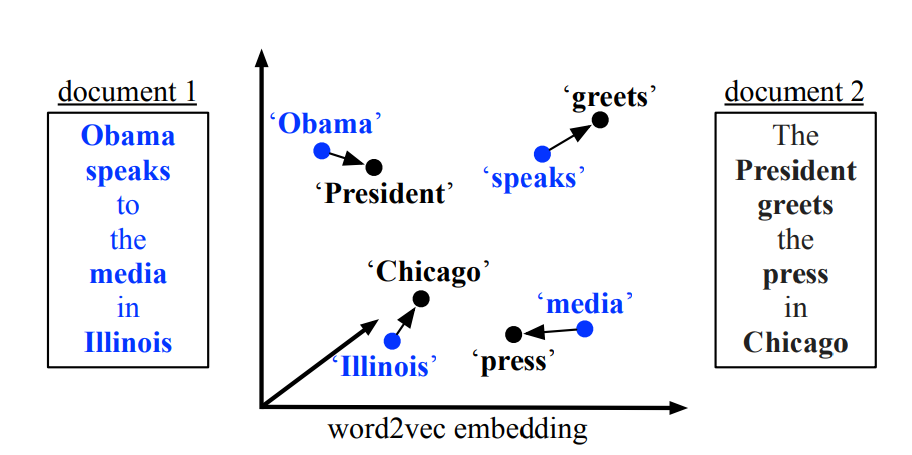
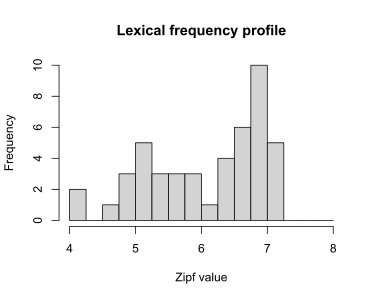
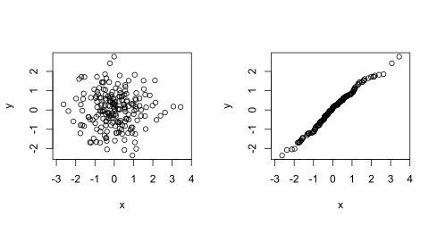
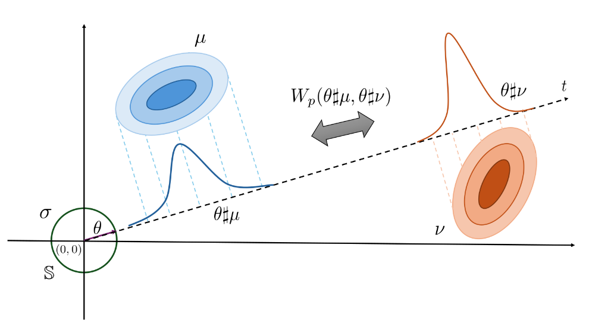

Kernel-based regression using distribution-valued inputs
Author
Jan Vanhove
Published
July 7, 2026
Concept 1: Kernel methods
Certain statistical tools, including Gaussian process regression (GPR; see below) and support vector machines (SVM), don’t require the predictors \(x_1, \dots, x_n\) to be represented explicitly (for instance, as numerical vectors). Instead, they rely only on a notion of the pairwise similarities between the predictors. This similarity is expressed by means of a kernel\(k\) that takes in two predictors and outputs a number expressing the similarity between them. There exists a whole host of different functions that may serve as kernels.
NoteGaussian processes and kernels
The basic idea behind Gaussian process regression is that you model the outputs (i.e., the dependent variables) \(Y_1, \dots, Y_n\) as a realisation of an \(n\)-variate Gaussian (= Normal) distribution. The kernel matrix \(\boldsymbol{K}\), which contains the pairwise kernel values \(k(x_i, x_j), 1 \leq i, j \leq n\), serves as the covariance matrix of this \(n\)-variate Gaussian distribution. That is, it expresses the variance of each output \(Y_i\) as well as how strongly the different outputs are correlated with each other.
The illustrations below shows some possible (a priori) realisations of \(\boldsymbol{Y} = (Y_1, \dots, Y_n)\) for different choices of kernel:
The linear kernel essentially enables the data to be modelled in terms of a linear regression model.
The periodic kernel is able to model sine waves and the like.
The Gaussian radial basis function retrieves smoothly varying functions.
The Matérn(1/2) kernel can fit jaggedly varying functions.
The Matérn(3/2) kernel can fit somewhat more smoothly varying functions.
# Random seedset.seed(2026-07-07)# Plotting functionplot_gpr <-function(x, K, n =4, main ="") { cols <- RColorBrewer::brewer.pal(n, "Dark2") Y <- MASS::mvrnorm(n = n, mu =rep(0, length(x)), Sigma = K)plot(x = x, y = Y[1, ], ylim =range(Y), type ="n", las =1,xlab ="x", ylab ="y", main = main)for (i inseq_len(n)) {points(x = x, y = Y[i, ], type ="o", col = cols[i]) }}# Predictor data and distances between themx <-seq(-5, 5, by =0.2)D <-outer(x, x, "-") |>abs()# Linear kernelK_linear <-outer(x, x, "*")plot_gpr(x, K_linear, main ="Linear kernel")

# Periodic kernel - note that the period is the same for all curvesK_periodic <-exp(-sin(D)^2)plot_gpr(x, K_periodic, main ="Periodic kernel")

# RBF kernelK_rbf <-exp(-D^2)plot_gpr(x, K_rbf, main ="Gaussian RBF kernel")

# Matérn 1/2 kernelK_matern12 <-exp(-D)plot_gpr(x, K_matern12, main ="Matérn(1/2) kernel")
plot_gpr(x, K_linear * K_matern12, main ="Linear * Matérn kernel")

There are a lot of possibilities to define a suitable kernel \(k\); see for instance https://anhosu.com/post/kernels-r/. The kernels that will be most relevant to us are those that depend only on the pairwise distances\(d(x_i, x_j)\) between \(x_i\) and \(x_j\), \(1 \leq i, j \leq n\). Such kernels are known as stationary kernels.1
In the Shiny applet below, the inputs \(x_1, \dots, x_n\) are real numbers. The usual (Euclidean) pairwise distance between them is \[d(x_i, x_j) = |x_i - x_j|,\] for \(1 \leq i, j \leq n\). This distance affords analysts several possibilities to build a stationary kernel.2
Here are a few options:
The Gaussian radial basis function (RBF), also called the squared exponential: \[k(x_i, x_j) = s^2\exp\left(-\frac{d^2(x_i, x_j)}{2t^2}\right)\] with hyperparameter \(s^2, t\).
The power exponential, which is a generalisation of the RBF: \[k(x_i, x_j) =
s^2\exp\left(-\left(\frac{d^2(x_i, x_j)}{2t^2}\right)^{\kappa}\right)\] with an additional hyperparameter \(\kappa\).
The Matérn kernel, here with smoothness parameter \(\nu = 3/2\): \[k(x_i, x_j) =
s^2\left(1 + \frac{\sqrt{3}d(x_i, x_j)}{2t}\right)
\exp\left(-\frac{\sqrt{3}d(x_i, x_j)}{2t}\right).\]
Not all notions of distance \(d(x_i, x_j)\) result in useful kernels, and not all functions that depend only on \(d(x_i, x_j)\) can serve as kernels. But when working with the Euclidean distance, the functions above satisfy all requirements, as do combinations (e.g., conical combinations and pointwise products) of them.
For common methods such as linear regression or random forests, the inputs are represented as numeric vectors. However, not all data structures naturally occur as vectors:
Chemists may prefer to work with graphs representing molecular structures.

Word meanings can be represented as numeric vectors, so document contents can be thought of as point clouds.

The lexical frequency profile of a text can be represented as the empirical distribution of the frequencies (here: Zipf values) of the words occurring in the text.
In all of these cases, you can try to represent certain characteristics of the objects (e.g., the mean Zipf value) in feature vectors which can then be input into linear regression, random forests, etc. While this inevitably results in a loss of information, the hope is that the feature vector captures the relevant aspects.
One alternative is to either treat or encode the objects as probability distributions in the hopes that this loses less relevant information than a representation by means of a feature vector does. For lexical frequency profiles and point clouds, this representation as a probability distribution is immediate: You treat the lexical frequency profile or the point cloud as an empirical distribution. For graphs, this takes a bit more work, but useful encodings exist.
Concept 3: Distances between distributions
The goal is now to apply kernel methods using inputs that are represented as distributions. To this end, we need a suitable distance metric between probability distributions. When dealing with univariate distributions, it turns out that the so-called Wasserstein distance of order \(p = 2\) is useful in the sense that it can be slotted into the Gaussian RBF, the power exponential, and the Matérn functions to give suitable kernels.3
Informally, the Wasserstein distance between probability distributions \(P\) and \(Q\) expresses what the least amount of effort is that you need to expend in order to shift about the probability mass of distribution \(P\) so that it corresponds to that of distribution \(Q\). For the Wasserstein distance of order \(p = 2\), ‘effort’ is defined in terms of squared distances.
Computing the Wasserstein distances between univariate empirical distributions can be done pretty cheaply and essentially boils down to running two sorting operations.
When working with multivariate distributions, however, Wasserstein distances are no longer attractive:
They are much more difficult to compute.
They can’t be slotted into the Gaussian RBF, the power exponential, and the Matérn functions to give suitable kernels.4
One option is to work with Wasserstein distances between marginal distributions. For instance, if the distributions you’re working with live in three dimensions, you compute Wasserstein distances between the three corresponding dimensions. You can construct kernels using the resulting three distances and combine these into a single kernel.
One drawback of relying on marginal distributions only is that two distributions may look completely different from one another yet have the same marginal distributions:

These two bivariate distributions have the same marginals.
A kernel based on marginal distributions only couldn’t tell distributions with the same marginals but different joint distributions apart – and it’s possible that the relevant signal isn’t contained in the marginals but rather in how the different components are related to each other.
An alternative is to use the so-called sliced Wasserstein distance (of order \(p = 2\)):

Figure 2.4 from Nguyen. 2025. An introduction to sliced optimal transport: Foundations, advances, extensions, and applications.
To compute the sliced Wasserstein distance, you project the multivariate distributions onto a randomly chosen line that runs through the origin. The resulting distributions are univariate, so we may cheaply compute the 2-Wasserstein distance between them. The sliced Wasserstein distance is then defined in terms of the expected value of the resulting 2-Wasserstein distance, with the random bit being the choice of the line through the origin.
In practical terms, you pick a bunch of lines randomly, project the distributions on them, compute the Wasserstein distances between the projections, and average them.
Advantages of the sliced Wasserstein distance:
It is fairly cheap to estimate.
It is a valid distance between probability distributions with finite second moment. (This includes all empirical distributions.)
This distance can be slotted into the Gaussian RBF, power exponential and Matérn functions to give a valid kernel.
It takes into account the entire distributions, not just their marginals.
Disadvantages:
It takes into account the entire distributions… including aspects that aren’t relevant for the regression (or classification) task, degrading performance of the downstream model. This isn’t much of a problem when using kernels based on marginal distributions only: when fitting the model, the irrelevant margins will get downweighted, minimising their impact on the prediction.
It is scale-sensitive: if you express one component of a distribution on a different scale (e.g., cm instead of inches), the downstream model will perform differently.
You can’t really draw input-output plots like in the applet above…5
Note: Chapter 5 of my Master’s thesis is essentially on the second problem.
I wrote the slicer package to carry out sliced Wasserstein computations.
Now what?
It could be fun and useful to use Wasserstein distances and sliced Wasserstein distances to revisit problems in AL (and in the social sciences more broadly) that naturally call out for a distributional approach but that so far have been tackled using feature vectors and summaries.
Lexical frequency profiles for quality predictions
1,020 short German texts: 816 in training set, 204 in test set.
About 16 raters per text, 1-9 scale. \(\leadsto\) mean rating per text as outcome.
Lots of lexical and other properties per text.
Generalised additive model with 6 predictors resulted in RMSE of 0.793 on the test data (compared to a baseline of 1.18; test set \(R^2 \approx 0.55\)).
Quickish attempt:
For each of these six predictors, build an RBF kernel.
Additionally, compute the Wasserstein distances between the lexical profiles (Zipf) of the distributions and build another RBF kernel.
Results:
6 kernels: test set RMSE 0.820 (\(R^2 \approx 0.52\)).
More generally, it may be interesting to take a closer look at the literature on representing lexical frequency profiles (Nation and Laufer, etc.) and see if working with the distributions directly (instead of using summaries and frequency bands) buys us something. It may even be possible to use Wasserstein distances between lexical profiles to carry out something akin to a t-test (i.e., using the distributions as outcomes in a group comparison rather than as predictors).
That said, I don’t expect these different approaches to result in huge differences. The main advantage of the distributional approach is that it would sidestep some arbitrary decisions (e.g., cut-offs for lexical frequency bands) and that it could distinguish between lexical frequency profiles with different shapes yet with the same summary statistics.
Two considerable disadvantages would be a loss of interpretability and the need to retain the training data when making predictions for new inputs.
Comparisons of vowel distributions
E.g., for each speaker, measure the degree of overlap between the F1/F2/F3/duration clouds of /e/ and /ɛ/ realisations using Wasserstein/sliced Wasserstein. Then compare these degrees of overlap between groups.
Compare the clouds of /u/ realisations between speakers?
L2 and L1 speakers produce /ɛ/ sounds. Compute the barycentre of the L1 vowel clouds (roughly, the average L1 vowel cloud)? Compute distances between L2 vowel clouds and this barycentre.
Compute distances between L1 and L2 vowel clouds within a speaker?
Footnotes
The linear kernel used in the info box, for instance, is not a stationary kernel: The kernel value corresponding to \(x_i = 4\) and \(x_j = 5\) is \(k(4, 5) = 20\), whereas for \(x_i = 1\) and \(x_j = 2\), we have \(k(1, 2) = 2\). The values that this kernel produces, then, depend not only on the distance between the objects, but also on their position in the space in which they live. The reason why stationary kernels are of interest to us is that the objects we want to work with don’t live in a space where the notions of both ‘positions’ and ‘distances’ makes sense. Rather, they merely live in a space in which we can say something about pairwise distances between objects.↩︎
You can define other kinds of distance between real numbers, for instance \(d(x_i, x_j) = 1\) if \(x_i = x_j\) and \(d(x_i, x_j) = 0\) if \(x_i \neq x_j\). But these wouldn’t necessarily allow you to build useful kernels.↩︎
The more specific reason is that it can be shown that the Wasserstein distance of order 2 between univariate distribution is a so-called Hilbertian distance, and Hilbertian distances can be slotted into these functions to obtain suitable kernels.↩︎
In contrast to Wasserstein distance of order 2 between univariate distributions, Wasserstein distances between multivariate distributions aren’t Hilbertian.↩︎
In principle, it should be possible to apply multidimensional scaling in order to draw some kind of plot. But it’s a far cry from a nice scatterplot.↩︎